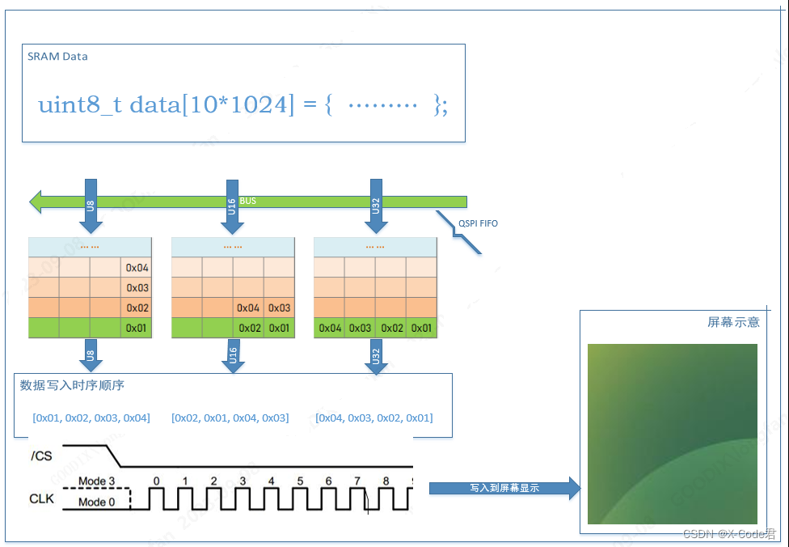
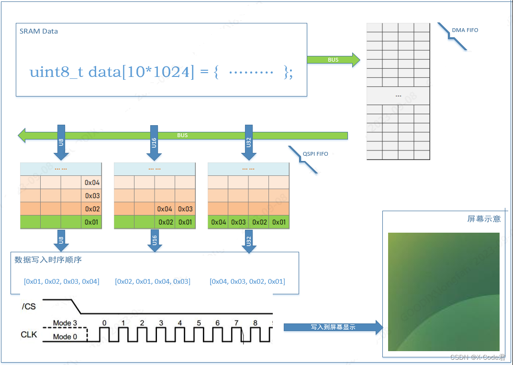

02.SPI-QSPI协议专题(2) - 构建GR55xx (Q)SPI高速传输接口的基础
[TOC]
前言
SPI/QSPI 协议接口是显示类、存储类、以及一些传感器设备的数据通信接口。
通过这个技术专题, 详细讲解 GR55xx 系列芯片 SPI/QSPI 协议、芯片模块的设计特点、软件接口的用法以及构建高效率的应用接口, 帮助用户快速的理解和发挥 SPI/QSPI 的高吞吐性能。
系列文章一般情况适用于 GR551x、GR5525、GR5526； 如果只适用于特定芯片, 会进行标注.
1. 基础的应用背景补充
1.1 系统的Master 和 Slave:
Master - 简单而言, 能对系统总线上挂载的各类设备发起主动的访问的角色. SoC 的典型 master 就是 CPU, 它可用主动对任意外设发起访问操作; 另一个非典型master 就是 DMA.
Slave - 简单而言, 在总线系统中不能主动访问其他设备, 被动接受 master 设备的访问操作.
DMA - 直接存储访问, CPU 负责的事务多而繁杂, 其中行为简单而又耗时巨大的 数据搬运任务, 可以从CPU剥离出来, 交由DMA 帮助执行. 而数据存储访问、显示数据传输, 就属于典型的大数据块搬运场景, 非常适合用 DMA 来协助CPU 完成.
1.2 同步访问和异步访问
同步访问 : 一般地，Master 对目标Slave 设备发起访问操作, 操作可以涉及读写操作、指令执行、通信等各种场景, 在发起操作后, master 一直原地等待操作结果的完成. 直到操作的状态标识完成. 才进一步执行其他事务
异步访问: 一般地，Master 对目标Slave 设备发起访问操作, 但此时 Master 并不关心操作是否完成, 转而立刻去执行别的事务; 直到上次访问操作完成后通过硬件或软件方式（或master在其他事务的间隙周期性查询）, 通知master 来结束访问逻辑达到访问事务的完备性.
| 操作 | 优点 | 缺点 |
|---|---|---|
| 同步 | 程序逻辑简单, 任务串行执行 | Master 由于过多时间处于等待, 导致使用率不高, 不能充分挖掘芯片性能 |
| 异步 | 让所有mster 尽可能同时都运行起来, 充分挖掘芯片性能 | 程序逻辑一般比同步操作更复杂 |
在需要高带宽的产品开发中, 进行接口架构时, 尽可能让 CPU 和 DMA 都同时运转起来, CPU 执行指令类事务，DMA 执行大块数据的搬运事务. 比如手表等产品, 采用A-B Buffer架构, 在CPU执行渲染事务的同时, DMA就可以向屏幕搬运数据进行显示.
2. 数据传输的行为
将10 Kbytes 数据从SRAM 通过 QSPI 接口发送为例, 进行说明 (SPIM <SPI Master, 后同>原理相通, 后不再补充 SPIM行为)
2.1 CPU 将数据通过QSPI直接写入屏幕

传输开始, 启动 SPI 传输. CPU将 SRAM数据逐个搬运到 QSPI 的 FIFO
SPI 控制器开始工作, 根据配置的工作频率将 FIFO 中的数据逐个发送到协议数据线
假设 FIFO 深度为N, 当CPU 传输使用的总线宽度为 Byte时候, FIFO 最多缓存 N Bytes数据；同理, 传输宽度 Halfword 和 Word 分别对应 最多 2N Bytes 和 4N Bytes 的 FIFO 缓存
当 CPU 压入数据速度 小于 QSPI 向外发送速度时, 会 引发一些不可控行为.
整个过程中, CPU 都在负载数据的传输工作.
2.2 DMA 将数据通过QSPI直接写入屏幕

传输开始, CPU 配置完成 DMA、QSPI, 开始数据传输工作
DMA 将数据从 SRAM 读入DMA FIFO 再转发到 QSPI FIFO.
SPI 控制器同步开始工作, 根据配置的工作频率将 FIFO 中的数据逐个发送到协议数据线
假设 FIFO 深度为N, 当CPU 传输使用的总线宽度为 Byte时候, FIFO 最多缓存 N Bytes数据；同理, 传输宽度 Halfword 和 Word 分别对应 最多 2N Bytes 和 4N Bytes 的 FIFO 缓存
整个传输过程中, CPU 仅负载配置激活 DMA和 QSPI模块. 然后进行其他事务
当数据传输完成, DMA/QSPI 通过硬件中断通知 CPU, 然后进一步处理传输后的其他事务
2.3 传输中的蓄水池问题 (生产者&消费者问题)
SPI FIFO 就是传输过程的蓄水池, 如果 Master 写入速度 快于 QSPI外发速度, 就可能出现 FIFO 爆仓溢出， 标记为 TXO (Transmit Overflow)
如果 Master写入速度慢于 SPI 外发速度, 就可能出现 FIFO 变空无数据可发, 标记为 TXE (Tranmit Empty)
上述现象跟计算机中熟悉的生产者&消费者行为一样, 对于任意的芯片在应用场景中都可能存在, GR55xx 系列芯片对上述行为有不同的解决方法. 作为 发送的镜像行为, 接收数据时候与上述行为 原理类似, 过程相反.
附录
96MHz 主频 | 256KB SRAM | 高效DMA | 深度优化 QSPI | 提供Watch Demo | 智能手表 | 码表 | 旋钮屏 | 益智游戏 | 串口屏
芯片资料: https://www.goodix.com/zh/product/connectivity/ble
对 GR552x BLE技术、穿戴及Iot产品感兴趣的同学, 欢迎加入 QQ技术社群: (群号 - 168552615)